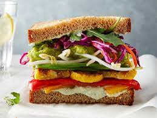

Veggie Sandwich

Description
Healthy snack for brekfast. Veg sandwich is go to choice of many
youngsters because its easy to make and its healthy and tasty as well
Ingridents
- 2 Bread Slices
-
Vegetables(Tomato, Onion, Cucumber, Beat are commonly used, feel free to
add or remove as per your preference)
- Sandwich Maker(optional)
Steps
- Cut vegetables into thin slices
-
Put the vegetables between bread slices and you're veggie sandwich is
ready!
OR
-
Put your sandwich in the sandwich maker if you prefer toast sandwich